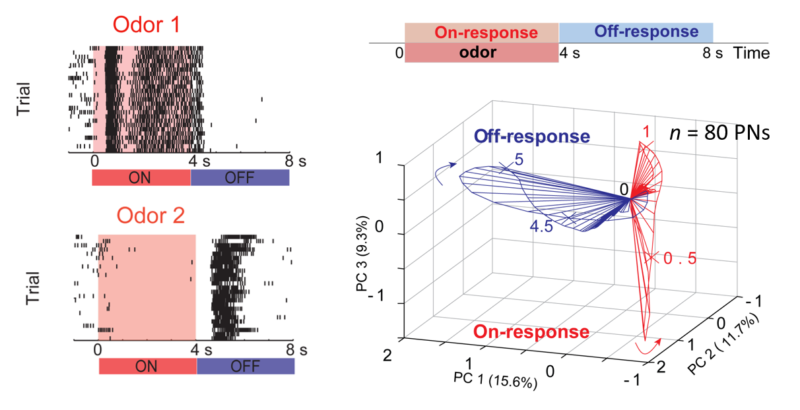
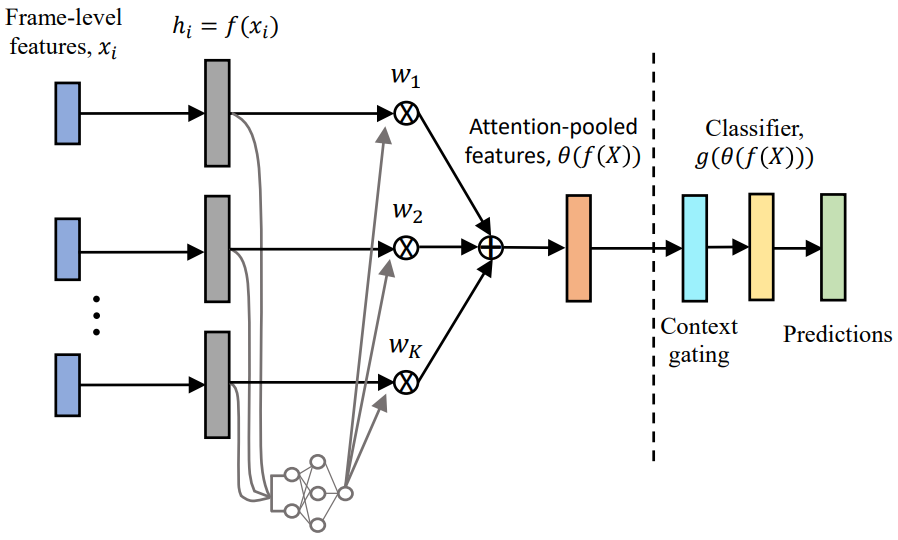
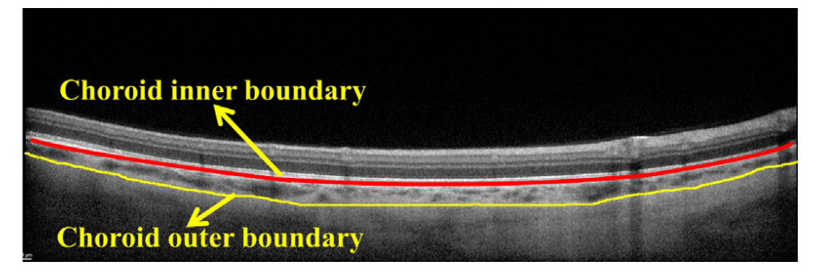

Dynamic contrast enhancement and flexible odor codes

One of the fundamental questions that still needs to be addressed in Neuroscience is how are the external stimuli represented
at the neural level (i.e. Neural Coding) while still performing adaptive computations. Also, what features of adapted neural responses are relevant for behavior? In this
study, I addressed these questions by examinig the data using statistical and machine learning techniques.
Click here to read more
Orthogonal neural responses contributing to behavioral onset and termination

A simple sensory stimuli evoke neural responses that are dynamic and complex. Are the
temporally patterned neural activities important for controlling the behavioral output? Our results reveal that in the insect antennal lobe, due to circuit
interactions, distinct neural ensembles are activated during and immediately following the termination of every odorant. We find that ON and
OFF ensemble neural activities carry similar amount of information about odorant, but differ in their circuit-level properties and more importantly in their relevance to behaviour
Multi-attention Networks for Temporal Localization of Video-level Labels

Temporal concept localization within video has been an active research problem in the field of computer vision. Precisely identifying an action within a video
gives us the ability to quikly search for a specific moment that is important to us. We approached this problem using attention mechanism to identify important frames
over time. Furthermore, we proposed a muli-attention model to indetify multiple actions within the same video.
Automated estimation of choroid boundary from OCT scans

Optical Coherence Tomography (OCT) scans enables opthalmologists to assess pathological changes in blood vessels present in the inner walls of the posterior visual section (choroid layer).
Experts manually perform thickness and volume distributions measurements of choroidal vasculature, which is a tedious process when there are hundreds of scans per patient. We automated this
segmentation problem by exploiting structural dissimilarity between choroid and sclera and estimated the choroid outer boundary.